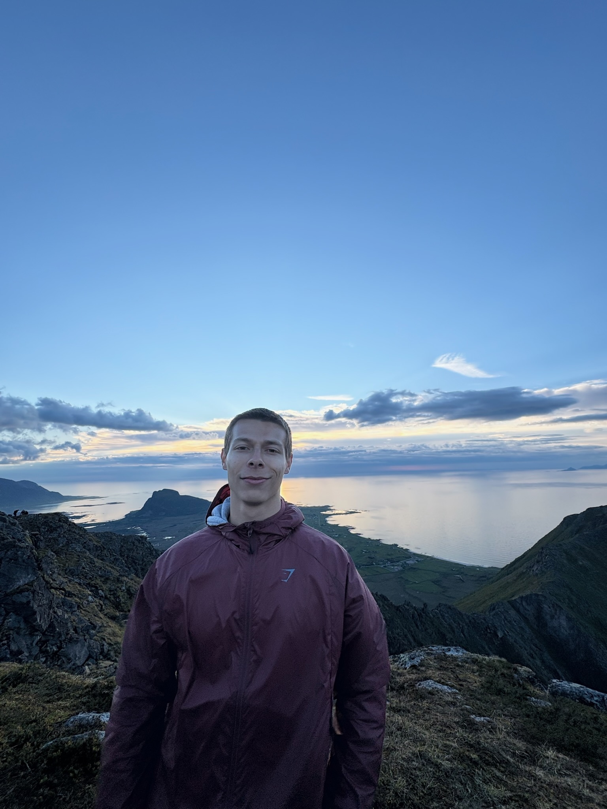

ALPIN-TRAIL
ALPIN-TRAIL
Yoann CHARLES
Passionné de sport de nature et de montagne, j'ai conçu l'ALPIN-TRAIL, un trail de 20 km pensé comme un projet complet : parcours, sécurité, logistique, communication et accueil des participants.
Ce site présente l'évènement tel qu'il pourrait être proposé au public.
Découvrir la courseMa formation
Master 2 MELS-CP
Management de l'évènementiel et des loisirs sportifs, parcours « Conception de projets », à l'Université Paris Nanterre. Cette formation m'apprend à imaginer, organiser et évaluer des évènements sportifs.
Compétences mobilisées
- Conception et pilotage d'un projet évènementiel
- Élaboration du budget et recherche de partenaires
- Gestion de la sécurité et des autorisations
- Communication et recrutement de bénévoles